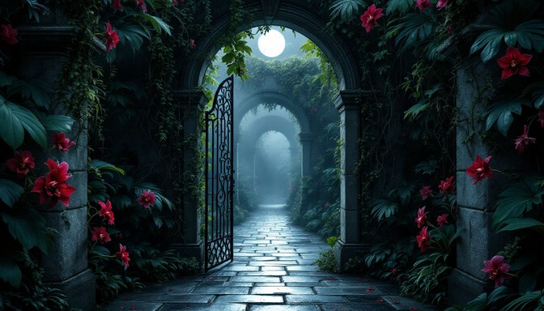

Du trittst hindurch und findest dich in einem seltsamen Garten wieder. Doch etwas stimmt nicht - die Pflanzen scheinen zu flimmern und zu verschwimmen, als wären sie nicht real. Der Himmel über dir wechselt ständig die Farbe, von tiefblau zu violett zu einem unnatürlichen Grün.
In der Mitte des Gartens steht ein prächtiges Tor aus schimmerndem Material, das wie flüssiges Silber aussieht. Doch als du näher kommst, erkennst du, dass es nur eine Illusion ist. Plötzlich wird dir klar, dass dieser ganze Ort eine Täuschung ist. Du musst einen Weg zurück in die Realität finden. Zwei Pfade führen aus diesem Illusionsreich heraus.